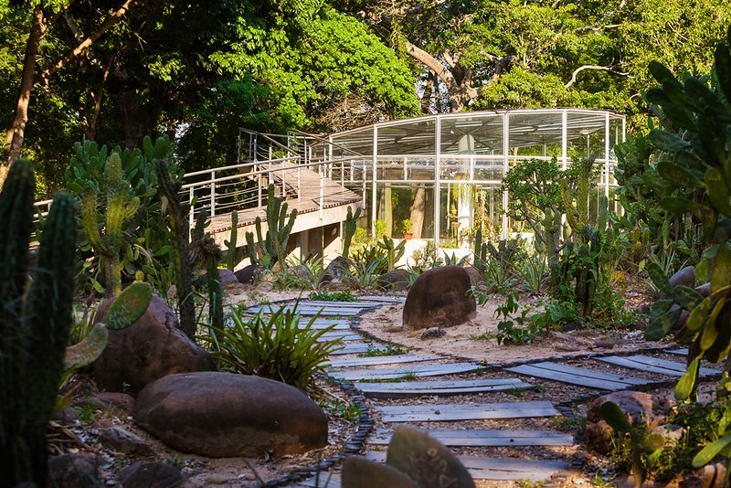
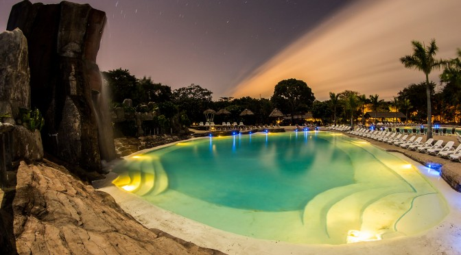
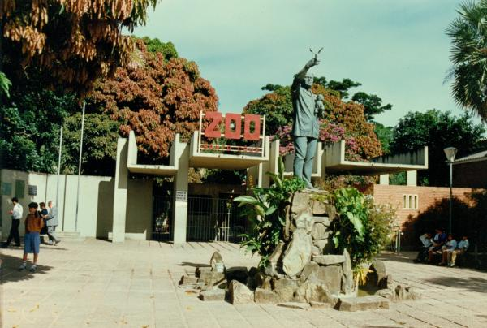

SANTA CRUZ
Santa Cruz de la Sierra es el centro comercial de Bolivia y la ciudad capital del departamento de Santa Cruz. Se ubica sobre el río Piraí, en las zonas bajas tropicales al este de los Andes. La fundaron los españoles en el siglo XVI y actualmente es un núcleo cosmopolita con museos, restaurantes y discotecas. El casco histórico tiene en su centro la Catedral Metropolitana de ladrillo rosa en la Plaza 24 de septiembre, la plaza central.

Andrea: El Museo de Arte Sacro adyacente es un museo religioso con pinturas, esculturas y cubertería. En las cercanías, se encuentra el pequeño Museo de Arte Contemporáneo, que exhibe arte moderno de artistas bolivianos. Las culturas de los numerosos grupos étnicos de la región se exhiben en el Museo Etnofolklórico. En los alrededores de la ciudad, el Jardín Botánico de Santa Cruz contiene bosques llenos de aves y monos capuchino. Más alejado está el Parque nacional Amboró, una vasta reserva con cientos de especies de aves, sitios de campamento y senderos hacia cuevas, cascadas, bosques y montañas.tango.
El Jardín Botánico Municipal de Santa Cruz de la Sierra es un jardín botánico de 217 hectáreas de extensión en la ciudad de Santa Cruz de la Sierra.
El Parque Regional Lomas de Arena, es un área protegida de Bolivia, ubicada a 12 km al sureste de la ciudad de Santa Cruz de la Sierra.
Güembé es un hermoso parque con aves, mariposas, monos y tortugas además de una vegetación exuberante y muy bien cuidada. Hermosas piscinas y senderos que llevan a la copa misma de los árboles en donde existe un mirador que permite apreciar la inmensidad y la belleza del lugar. Mención especial para el restaurante que por un precio asequible entrega un almuerzo buffet de excelencia y rebajado para ta tercera edad.
La Catedral Metropolitana Basílica menor de San Lorenzo es el principal templo católico en la ciudad de Santa Cruz de la Sierra, Bolivia. Está situada en el centro de la ciudad, frente a la Plaza 24 de Septiembre.
El Zoológico Municipal de Fauna Sudamericana Noel Kempff Mercado, se encuentra en la ciudad de Santa Cruz de la Sierra, Bolivia. Es el más importante en el país y en América del Sur, por la extensa biodiversidad de especies autóctonas, además, es una de las principales atracciones turísticas de la ciudad.
